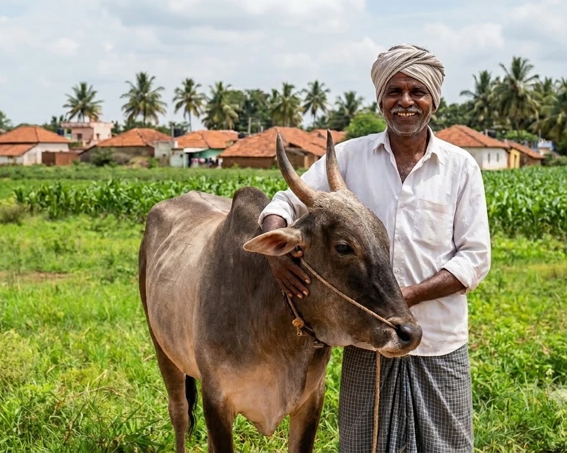
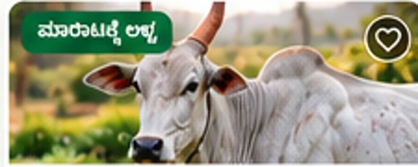
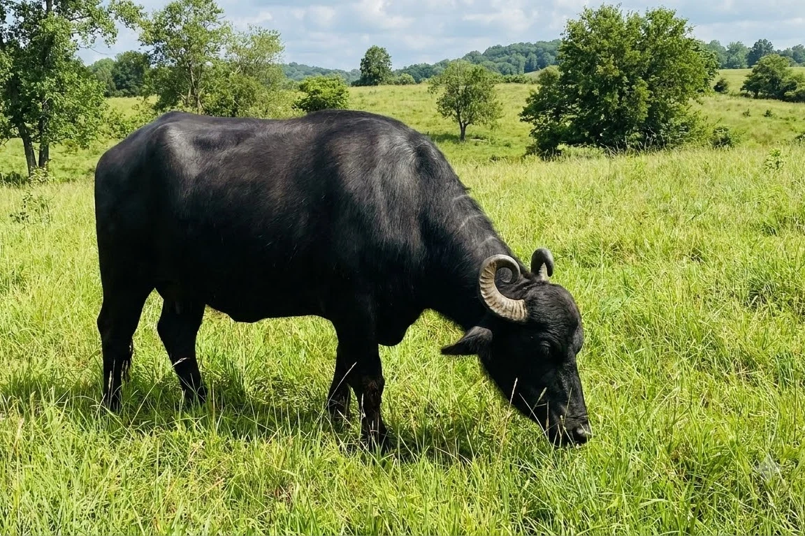
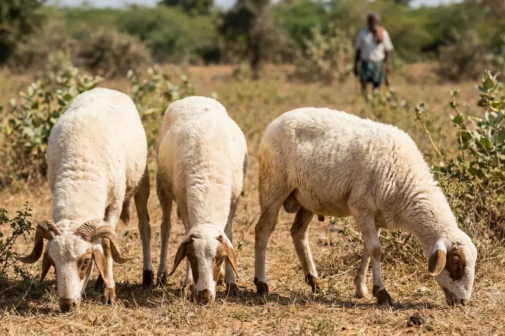

ನೋಂದಣಿ
ನಿಮ್ಮ ವಿವರಗಳು ಮತ್ತು ಸ್ಥಳವನ್ನು ಹಂಚಿಕೊಳ್ಳಿ.
ನಮ್ಮ ಪಶು — ಹಸು, ಎಮ್ಮೆ, ಕುರಿ ಮತ್ತು ಮೇಕೆಗಳ ಖರೀದಿ-ಮಾರಾಟವನ್ನು ಸುಲಭಗೊಳಿಸಲು ರೂಪಿಸಲಾಗುತ್ತಿರುವ ಕನ್ನಡ-ಮೊದಲ ಡಿಜಿಟಲ್ ಉಪಕ್ರಮ.

ಕನ್ನಡ-ಮೊದಲಸರಳ ಮತ್ತು ಸ್ಪಷ್ಟ ಭಾಷೆ
ಸ್ಥಳೀಯ ಸಂಪರ್ಕಜಿಲ್ಲೆ ಮತ್ತು ತಾಲ್ಲೂಕು ಆಧಾರಿತ
ರೈತ-ಕೇಂದ್ರಿತರೈತರ ಅಗತ್ಯಗಳಿಂದ ರೂಪಣೆ
ರೈತರ ನೈಜ ಅಗತ್ಯಗಳನ್ನು ಗಮನದಲ್ಲಿಟ್ಟುಕೊಂಡು ಸರಳ ಅನುಭವವನ್ನು ರೂಪಿಸುತ್ತಿದ್ದೇವೆ.
ನಿಮ್ಮ ವಿವರಗಳು ಮತ್ತು ಸ್ಥಳವನ್ನು ಹಂಚಿಕೊಳ್ಳಿ.
ಪಶುವಿನ ಫೋಟೋ, ತಳಿ, ವಯಸ್ಸು ಮತ್ತು ಇತರ ವಿವರಗಳನ್ನು ಸೇರಿಸಿ.
ಆಸಕ್ತ ಖರೀದಿದಾರರು ಮಾರಾಟಗಾರರನ್ನು ಸಂಪರ್ಕಿಸುವ ವ್ಯವಸ್ಥೆ.
ಖರೀದಿಗೂ ಮೊದಲು ಪಶುವನ್ನು ಸ್ಥಳದಲ್ಲೇ ಪರಿಶೀಲಿಸಿ.
ಮುಂಬರುವ ಆ್ಯಪ್ನಲ್ಲಿ ಪಶುವಿನ ವಿವರಗಳು ಹೇಗೆ ಕಾಣಬಹುದು ಎಂಬುದರ ಉದಾಹರಣೆ.
ಪ್ರದರ್ಶನ ಮಾದರಿ ಮಾತ್ರ — ಇವು ಕಲ್ಪಿತ ಉದಾಹರಣೆಗಳು; ನೈಜ ಮಾರಾಟದ ಪಟ್ಟಿಗಳಲ್ಲ.

ಮಾದರಿ ಪಟ್ಟಿ⌖ ಮಂಡ್ಯ, ಕರ್ನಾಟಕ

ಮಾದರಿ ಪಟ್ಟಿ⌖ ಧಾರವಾಡ, ಕರ್ನಾಟಕ

ಮಾದರಿ ಪಟ್ಟಿ⌖ ಮಂಡ್ಯ ಜಿಲ್ಲೆ
ರೈತರು, ಖರೀದಿದಾರರು ಮತ್ತು ಸ್ಥಳೀಯ ಸೇವಾ ಪೂರೈಕೆದಾರರ ಅಗತ್ಯಗಳನ್ನು ಗಮನದಲ್ಲಿಟ್ಟುಕೊಂಡು ರೂಪಣೆ.
ಈ ವೈಶಿಷ್ಟ್ಯಗಳು ಯೋಜನೆ ಅಥವಾ ಅಭಿವೃದ್ಧಿಯ ವಿವಿಧ ಹಂತಗಳಲ್ಲಿವೆ; ಎಲ್ಲವೂ ಈಗ ಲಭ್ಯವಿಲ್ಲ.
ಧ್ವನಿಯ ಮೂಲಕ ಪಶುಗಳನ್ನು ಹುಡುಕುವ ಸಾಧ್ಯತೆ.
ಯೋಜನಾ ಹಂತಲಸಿಕೆ ಮತ್ತು ಆರೈಕೆ ಮಾಹಿತಿಯನ್ನು ದಾಖಲಿಸುವ ಕಲ್ಪನೆ.
ವಿನ್ಯಾಸ ಹಂತಸ್ಥಳೀಯ ಪರಿಸ್ಥಿತಿಗೆ ತಕ್ಕ ಪಶು ಆಹಾರದ ಮಾಹಿತಿ.
ಯೋಜನಾ ಹಂತಸಂತೆ ಮತ್ತು ಪಶು ಬೆಲೆಗಳ ಮಾಹಿತಿ ನೀಡುವ ಯೋಜನೆ.
ಯೋಜನಾ ಹಂತನಮ್ಮ ಪಶು ಕರ್ನಾಟಕದ ರೈತರ ಅಗತ್ಯಗಳನ್ನು ಗಮನದಲ್ಲಿಟ್ಟುಕೊಂಡು ರೂಪಿಸಲಾಗುತ್ತಿರುವ ಕನ್ನಡ-ಮೊದಲ ಉಪಕ್ರಮ. ಪಶುಗಳ ಮಾಹಿತಿ ಮತ್ತು ಖರೀದಿ-ಮಾರಾಟದ ಸಂಪರ್ಕವನ್ನು ಸುಲಭವಾಗಿ ಅರ್ಥಮಾಡಿಕೊಳ್ಳಬಹುದಾದ ರೀತಿಯಲ್ಲಿ ಒದಗಿಸುವುದು ನಮ್ಮ ಉದ್ದೇಶ.
ಪೈಲಟ್ನಲ್ಲಿ ಆಸಕ್ತಿ ತಿಳಿಸಿ ↗ಆರಂಭಿಕ ಹಂತದಲ್ಲಿ ರೈತರ ಸಲಹೆಗಳನ್ನು ಕೇಳಲು ನಾವು ಬಯಸುತ್ತೇವೆ. ನಿಮ್ಮ ಆಸಕ್ತಿಯನ್ನು ತಿಳಿಸಿ.
ಈ ಫಾರ್ಮ್ ವಿವರಗಳನ್ನು ವೆಬ್ಸೈಟ್ನ ಡೇಟಾಬೇಸ್ಗೆ ಉಳಿಸುವುದಿಲ್ಲ. ನೀವು ಸಲ್ಲಿಸಿದ ವಿವರಗಳನ್ನು ಪರಿಶೀಲಿಸಿ, ನಂತರ WhatsApp ಅಥವಾ ಇಮೇಲ್ ಮೂಲಕ ಕಳುಹಿಸಬಹುದು.
ಪ್ರಸ್ತುತ ಯೋಜನೆ ಮತ್ತು ಪೈಲಟ್ ಹಂತದ ಬಗ್ಗೆ.
ಇಲ್ಲ. ಪ್ರಸ್ತುತ ಇದು ಸಾರ್ವಜನಿಕ ಮಾಹಿತಿ ಮತ್ತು ಪೈಲಟ್ ಆಸಕ್ತಿ ನೋಂದಣಿಗಾಗಿ ಇರುವ ವೆಬ್ಸೈಟ್. ಮಾರುಕಟ್ಟೆ ಕಾರ್ಡ್ಗಳು ಮಾದರಿ ಪ್ರದರ್ಶನ ಮಾತ್ರ.
ಬಿಡುಗಡೆ ದಿನಾಂಕ ಇನ್ನೂ ದೃಢಪಟ್ಟಿಲ್ಲ. ಪ್ರಗತಿ ಮತ್ತು ಪೈಲಟ್ ಮಾಹಿತಿಯನ್ನು ಅಧಿಕೃತವಾಗಿ ಹಂಚಿಕೊಳ್ಳಲಾಗುತ್ತದೆ.
ಈ ವೆಬ್ಸೈಟ್ನಲ್ಲಿ ಪೈಲಟ್ ಆಸಕ್ತಿ ತಿಳಿಸಲು ಶುಲ್ಕವಿಲ್ಲ. ಭವಿಷ್ಯದ ಸೇವೆಗಳ ಶುಲ್ಕ ನೀತಿ ಇನ್ನೂ ದೃಢಪಡಿಸಿಲ್ಲ.
ಇಲ್ಲ. ಈ ಪುಟದಲ್ಲಿನ ಪಟ್ಟಿಗಳು ವಿನ್ಯಾಸ ತೋರಿಸಲು ರಚಿಸಿದ ಮಾದರಿಗಳು. ನೈಜ ಮಾರಾಟದ ಪಟ್ಟಿಗಳಲ್ಲ.
ಅಧಿಕೃತ ಸಂಪರ್ಕ ಇಮೇಲ್ ಮತ್ತು WhatsApp ವಿವರಗಳನ್ನು ದೃಢಪಡಿಸಿದ ನಂತರ ಈ ವೆಬ್ಸೈಟ್ನಲ್ಲಿ ಪ್ರಕಟಿಸಲಾಗುತ್ತದೆ.